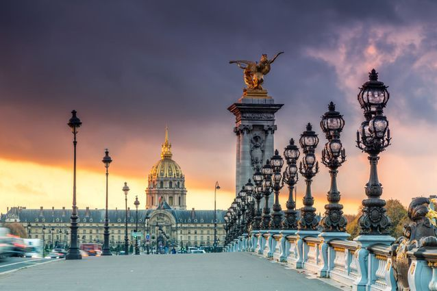
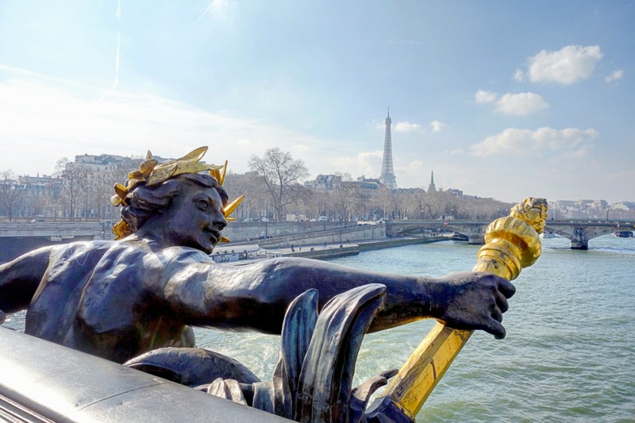
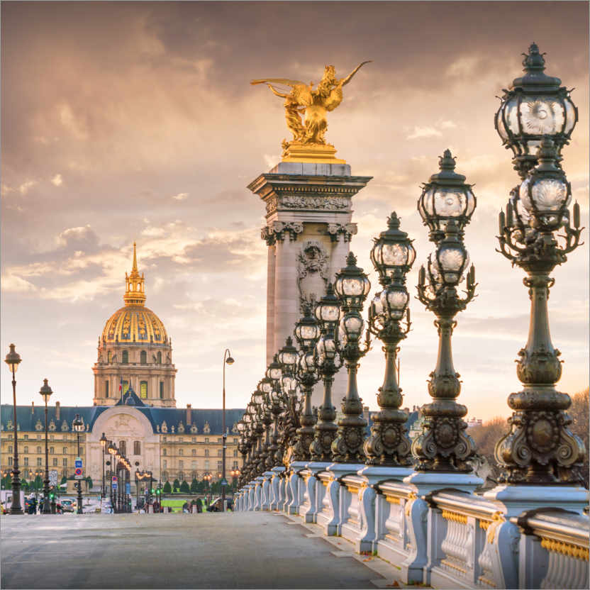
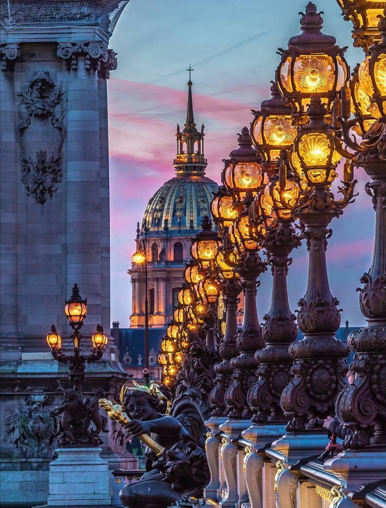
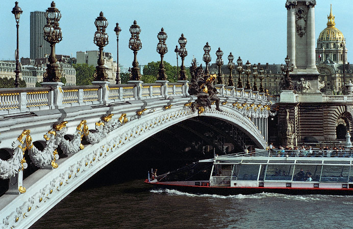
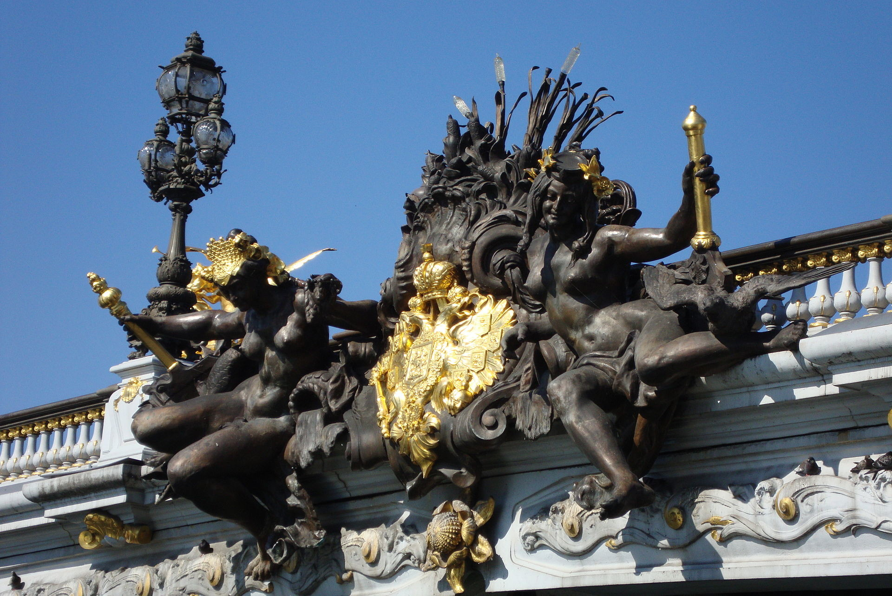
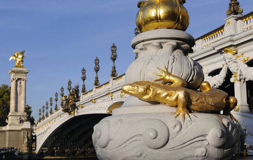
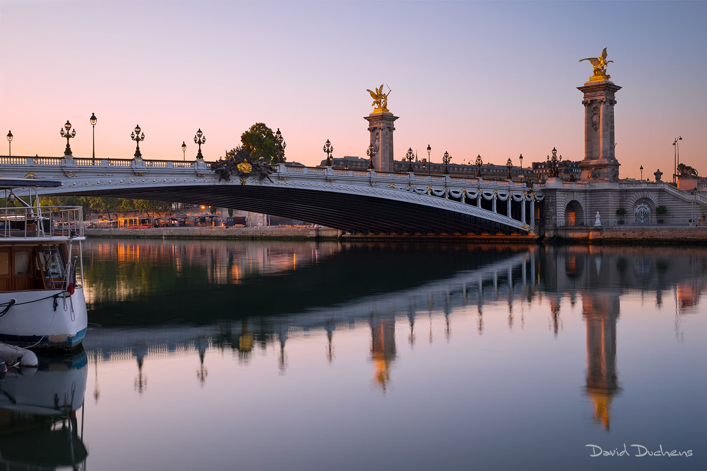
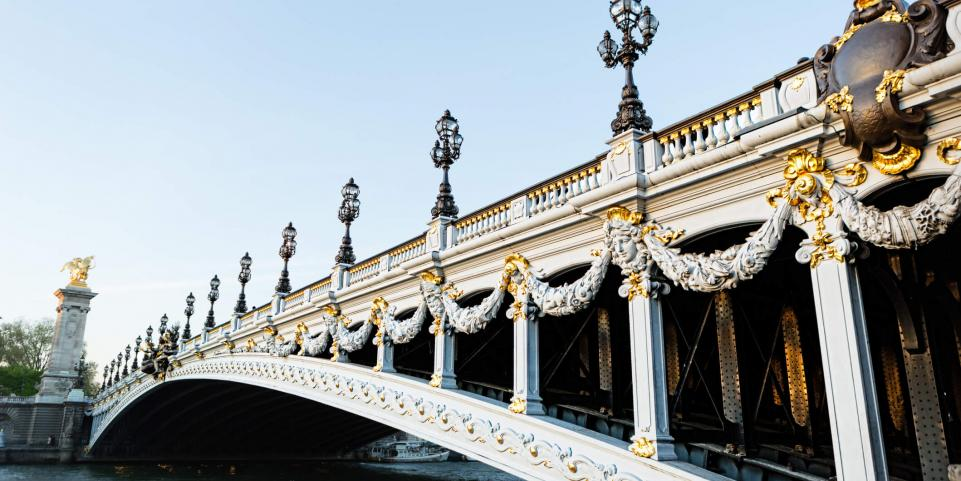

Pont Alexandre 3

Description
Le Pont Alexandre 3 est un pont en arc franchissant la Seine entre le 7e et le 8e arrondissement de paris
Il se trouve entre le pont de la concorde et le pont des invalides .
Il relie l'esplanade des Invalides et l'avenue Winston-Churchill, où se trouvent le Petit Palais et le Grand Palais.
Le pont Alexandre 3 tient son nom du tsar de russie Alexandre 3 (1845-1894).
Le Pont Alexandre 3 fait une longueur de 152 mètres et une largeur de 30 mètres . Il est essentiellement constitué
d'acier
Galerie








